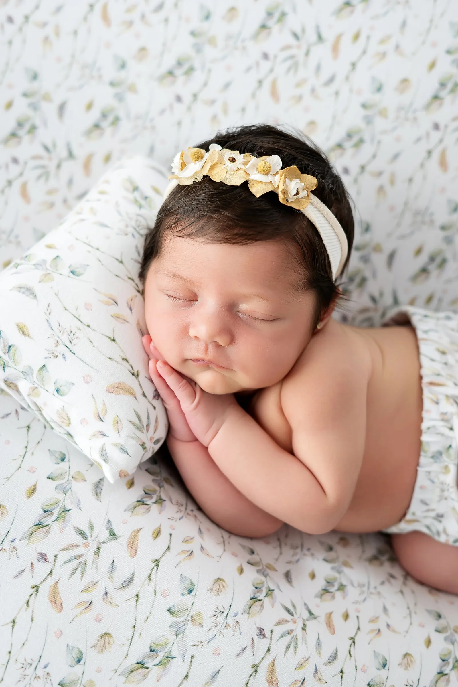

Sesión newborn
Newborn
Sus primeros días, para siempre. Una sesión muy especial, respetando su ritmo y creando recuerdos naturales, tiernos y llenos de emoción.

En sus primeros días tu bebé duerme profundo, mantiene la postura recogida del vientre materno y sus facciones son muy delicadas: esas manitas diminutas, los pies arrugaditos, las pestañas… Todo cambia muy rápido. En solo unas semanas ya no será igual, y por eso merece tanto la pena guardarlo.
La sesión newborn se hace siempre a su ritmo. No hay prisas ni horarios estrictos: paramos todas las veces que haga falta para comer, cambiar el pañal o simplemente acurrucarle. El estudio está climatizado y preparado para que tu bebé esté calentito y tranquilo, y vosotros podáis relajaros mientras yo me ocupo de todo.
La seguridad del bebé es siempre lo primero. Trabajo con posturas naturales y cómodas, con mucho cuidado y delicadeza, y nunca forzamos ninguna pose. Si tu bebé no está a gusto en una postura, simplemente pasamos a otra.
Pequeñas personas, grandes historias.
Cómo es la sesión
Paso a paso
-
01
Reservas durante el embarazo
Guardamos tu fecha prevista de parto. Te envío una guía con todo lo que necesitas saber para preparar la sesión.
-
02
Me avisas cuando nace
Me escribes por WhatsApp en cuanto llegue tu bebé y fijamos el día, entre sus 5 y 15 primeros días.
-
03
Una sesión tranquila
Venís al estudio, que estará calentito y preparado. Tu bebé come, duerme y posa a su ritmo mientras vosotros descansáis.
-
04
Fotos en familia
Terminamos con fotos con papá, mamá y hermanos, para recordar cómo erais cuando llegó.
-
05
Entrega de tus fotos
Edito con mimo cada imagen y te las entrego en una galería online privada.
Algunas fotos
Sesiones reales en el estudio


Cómo preparar la sesión
Pequeños consejos para que tu bebé esté tranquilo y dormidito:
- Dale de comer justo antes de salir de casa o al llegar al estudio: con la tripita llena duermen mejor.
- Vístele con ropa fácil de quitar, sin bodies que pasen por la cabeza, para no despertarle.
- Trae pañales, toallitas, chupete si lo usa y su leche o biberón.
- Si vais a salir en las fotos, mejor ropa lisa en tonos claros o neutros.
- Venid sin prisas: la sesión dura lo que tu bebé necesite.
Preguntas frecuentes
Todo lo que necesitas saber
¿Qué incluyen las fotografías newborn?
La sesión completa en el estudio, todo el atrezo y vestuario para el bebé (mantitas, cestas, diademas, gorritos…), fotos con papá, mamá y hermanos si lo deseáis, la edición cuidada de cada imagen y la entrega en una galería online privada. El número de fotografías depende de la tarifa que elijas; te lo detallo todo por WhatsApp.
¿Cuándo se realiza la sesión newborn?
Entre los 5 y los 15 primeros días de vida. En esos días duermen más profundamente y se sienten cómodos en las posturas recogidas, lo que permite fotos más tranquilas y naturales. Si por cualquier motivo no puede ser en esos días, escríbeme y lo adaptamos.
¿Cuándo hay que reservar?
Lo ideal es reservar durante el embarazo, sobre la semana 28–32. Reservamos con tu fecha prevista de parto y, cuando nazca tu bebé, me escribes y fijamos el día exacto. Así te aseguras un hueco en esos primeros días tan importantes.
¿Cuánto dura una sesión?
Entre 3 y 4 horas aproximadamente. Los recién nacidos marcan el ritmo: hacemos pausas para comer, cambiar el pañal y calmarle siempre que lo necesite. Por eso es importante venir sin prisas.
¿Pueden participar en la sesión hermanos y padres?
¡Sí! Al final de la sesión hacemos fotos con papá, mamá y los hermanos. Son de las fotos más bonitas y emotivas, y a los hermanos mayores les encanta sentirse parte de este momento.
¿Hablamos de tu sesión?
Cuéntame tu fecha prevista de parto y te guardo un hueco.
Reserva por WhatsApp